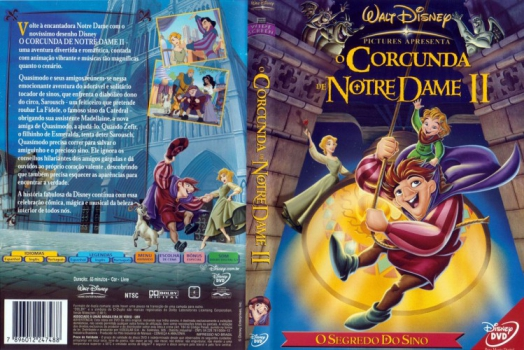

Outro Título:The Hunchback of Notre Dame II
País:United States, 68 minutos
Idiomas falados:Espanhol, Inglês, Português
Gênero(s):Animação, Família, Comédia, Romance
Diretor(s):Bradley Raymond
Escritor(es):Jule Selbo, Cindy Marcus, Flip Kobler, Victor Hugo
Codec:MPEG-2 (DVD)
Número: 5842


Certificado:
Sinopse:
Volte á encantadora Notre Dame com o novíssimo desenho Disney O CORCUNDA DE NOTRE DAME II - uma aventura divertida e romântica, contada com animação vibrante e músicas tão magníficas quanto o cenário. Quasímodo e seus amigos reúnem-se nessa emocionante aventura do adorável e solitário tocador de sinos, que enfrenta o diabólico dono do circo, Sarousch - um feiticeiro que pretende roubar La Fidele, o famoso sino da Catedral - obrigando sua assistente Madellaine, a nova amiga de Quasímodo, a ajudá-lo. Quando Zefir, o filhinho de Esmeralda, tenta deter Sarousch, Quasímodo precisa correr para salvar o amiguinho e o precioso sino. Ele ignora os conselhos hilariantes dos amigos gárgulas e dá ouvidos ao próprio coração valente, descobrindo que também precisa esquecer as aparências para encontrar a verdade. A história fabulosa da Disney continua com essa celebração cômica, mágica e musical da beleza interior de todos nós.
Elenco:


Tipo de mídia: DVD5,
Legendas: Espanhol, Inglês, Português, Sem Legendas
Alugado: Não
Tela: Anamorphic Widescreen